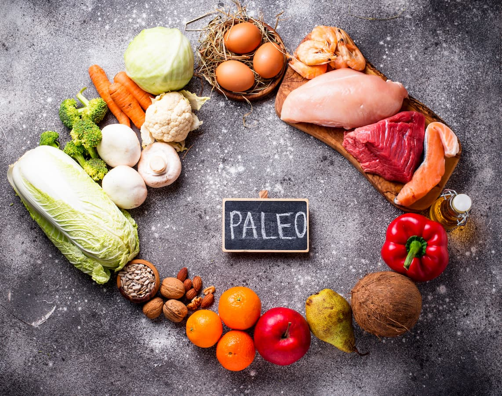

Clean Eating is Fun and Rewarding
NEW
Buffalo Chicken Casserole
If you’re interested in clean eating while also limiting your carbohydrates, you may have heard of the keto and paleo diet. The keto and paleo diets are a diet approach that focuses on getting your nutrients from fresh, unprocessed, or minimally processed foods. The thought of avoiding heavily processed foods might seem a lot of work, but eating cleaner can be easy and even better, rewarding with a few helpful guidelines at your disposal.
KETO DIET

The ketogenic diet, or keto diet, is a low-carb, high-fat regimen that limits carbohydrates to as low as 20 grams per day or even less. Meats, fish, eggs, most vegetables, nuts and seeds are all on the menu on a keto diet, but high-carbohydrate foods like grains and white potatoes are off-limits. Whether you’re interested in learning more about the keto diet or are looking for keto-approved recipes, meal plans and more, you’ll find it all at Clean Tasty Eats.
PALEO DIET
The popular Paleolithic diet, or paleo diet, centers on the idea that eating like our ancestors aligns with our genetics and promotes good health. It’s also known as the caveman, Stone Age, or steak and bacon diet. A paleo dieter’s food choices are limited to what could be hunted, fished, or gathered in prehistoric times such as meats, fish, and vegetables. The theory is that the rise in chronic diseases in modern society stems from the agricultural revolution. It suggests that adding grains, legumes, and dairy to meals may lead to a host of chronic diseases and conditions from obesity to allergies.